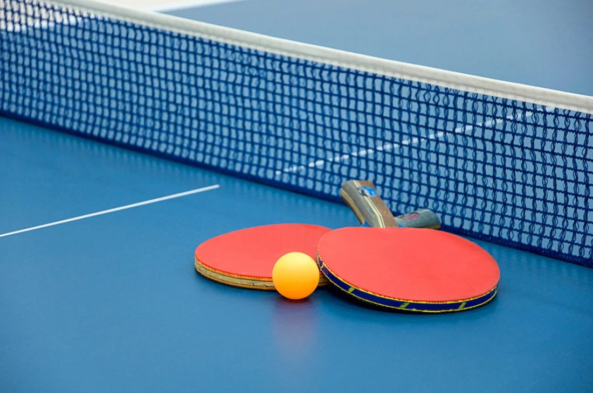
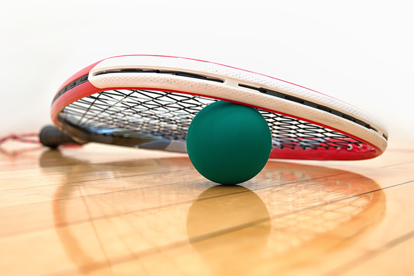
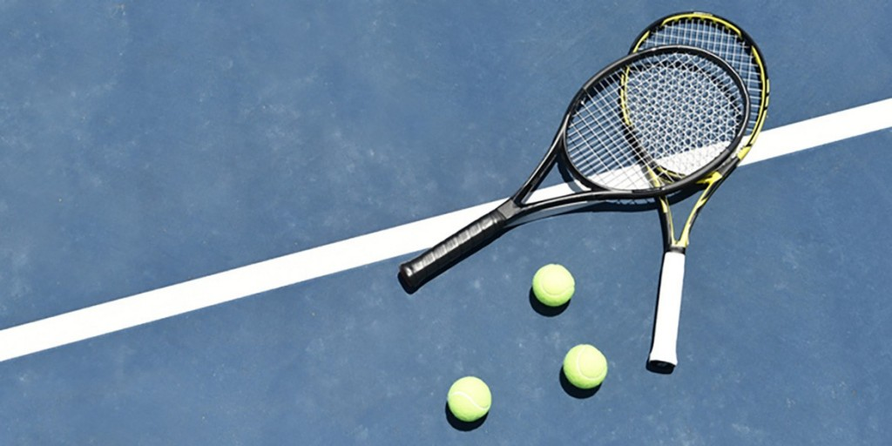
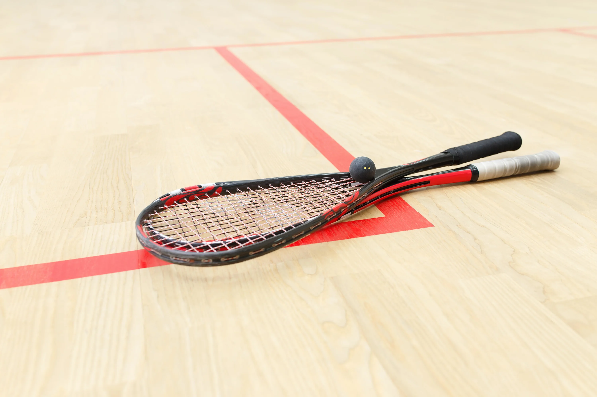
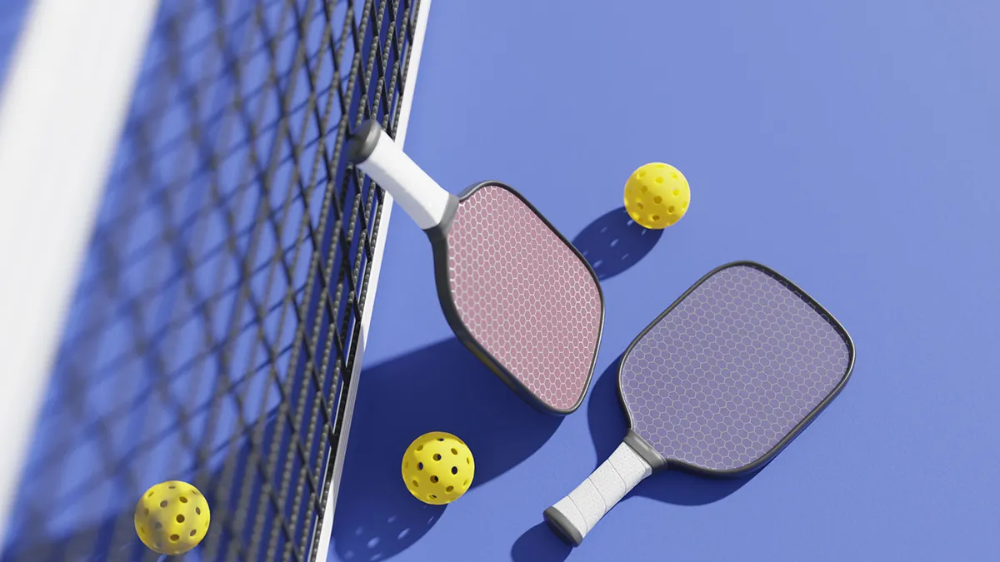
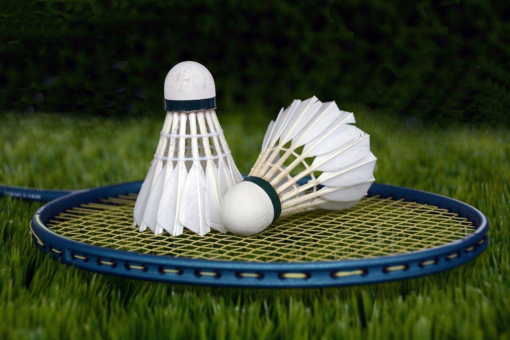

In this blog post, my plan is to go through each of the racket sports I've played chronologically based on when I first tried them, and talk a lot about what I think about them and my experiences with them. I love rackets so I think this blog will be super fun to write and probably also be fairly long.
The Different Racket Sports I've Tried:
The Beginning (Ping Pong):
First, of all, I LOVE ping pong, I wish I could play it way more than I do currently (I also unfortunately left my paddle at home when I went to college). Ping Pong (or table tennis I guess, but I think ping pong is more fun) is the first racket/paddle sport I ever tried, and it's amazing.
When I was super little, like 6 or 7, I lived with my grandparents and my dad, and they had a ping pong table in their backyard. I was really bad obviously, but I would sometimes play with my grandpa or my dad, with them obviously going super easy on me, but little kid me still had a lot of fun.
Eventually, me and my dad moved out of my grandparents house, and after a few years they offered us their ping pong table because they weren't using it (my grandpa went blind in one eye and didn't have very good depth perception anymore). My dad said yes, and then we had a ping pong table in our garage. We used it occassionally, but still not super often for a while.
When covid started was when I started to get super into ping pong. I was stuck in the house and it was an opportunity for me to still get energy out, so I would play with my dad whenever I could, and even alone I would put on headphones, fold half the table up, and just hit the ball again and again for hours while listening to a podcast or something.
Around that time was when I first started to get good at ping pong. I would play against my dad, and he had stopped going easy on me. I would play with him every time we had an opportunity, and we would usually play a match of a match, which was a best of 3 of best of 5s, if that makes sense.
Eventually, one year for christmas, my dad got both us actual good ping pong paddles, with nice rubber on both sides. After this was when I started actually getting good at ping pong, with the introduction of spin. The normal crappy paddles we had before didn't really have the ability to put spin on the ball, so even though my dad knew how (I refused to try), neither of us could use any significant spin, but with the new paddle, I was introduced to a whole new world of options.
Spin allowed me to have so much more fun and options in how to hit the ball. I could put way more power into it with topspin, or trick my dad with sidespin or backspin, and I had even more fun playing against him, as he did the same things against me, and our rallies felt way better.
After a while I became consistently better than my dad, but it was still competitive and super fun, however my dad has this friend, Steve, who is absurdly good at ping pong. He lives pretty far away but whenever he visits or we visit him, I always want to play him, and he almost always beats me.
Ping Pong Conclusion:
I absolutely love ping pong recreationally, I have amazing memories of playing my dad in ping pong and still have a great time playing him whenever I feel like it, and it was my first racket sport, but I never really played against people better than my dad, and I didn't play it as much as other racket sports, so it's not my favorite. Ping pong translates pretty well to other racquet sports, surprisingly. You use the same spin in tennis so it translates decently to that. It also obviously translates really really well to pickleball, because it's also a paddle and you're using the same spin.
Racquetball:
Racquetball is.... not my favorite racquet sport, so I wont talk about it much, however I do credit it with my introduction to my favorite racquet sport, which I'll talk about later, so I'll give it credit as a very fun recreational racquet sport
I first tried racquetball with my mom over the summer between 7th and 8th grade, and I thought it was awesome. I had this little fat racquet and this ball that would just bounce at full speed everywhere, and it was great to have something to do with my mom. It truly is an amazing recreational sport, but unfortunately it really deteriorates at a high level because of the lack of rules, so I only ever played it recreationally for about one summer
Racquetball Conclusion:
Racquetball is super fun to play with friends and recreationally, but doesn't look very fun at a high level , so I never got super into it. The skills for it very poorly transfer with most other racquet sports because of the extreme bounciness of the ball and the really weird racquet.
Tennis:
Tennis is not my favorite racket sport, primarily because I really, really suck at it. The only time I really played it was with my dad when I was at my mom's house during Covid. It allowed us to play like we used to play ping pong, but while also practicing social distancing across the court, however we both sucked. I've tried it a couple times since then, but I was never really able to get into it unfortunately.
Tennis Conclusion:
I think tennis is an amazing sport at both a recreational and especially a high level, it's just unintuitive to me so I've never been able to get good at it. I've seen a ton of tennis players in other sports, and it translates really well to pickleball and ping pong, and gives some boost to beginners in squash and badminton because they've handles a racket before, but it creates a lot of bad habits that are hard to get rid of.
Squash:
Squash is currently by far my favorite racquet sport. It is also the only one that I have played competitively in any aspect. I was introduced by squash because, well, I thought it was racquetball. In the summer between 8th and 9th grade, there were a bunch of free summer camps and I signed up for a squash camp that I read and thought it was just racquetball with a weird name. It was not.
I played at that squash camp and had more fun then I had ever had at any sport before. You play squash within a confined space, and it is very similar in concept to racquetball, except there are rules. You can't hit the ball above a certain line, or under a certain line, and the ball bounces MUCH less. These things may sound like it makes the game less fun, but it allows for so much more creativity and strategy, which is what I loved from ping pong, but the walls around added another dimension to it.
I joined the squash club after the camp and started playing several times a week and participating in tournamnets. I got my mom and my dad to play with me, and they had fun with it as well. Once I got good enough to play for real, the sport got even more fun and I realized why at a high level it was so much more fun than racquetball.
I played in a bunch of tournaments and a couple box leagues in the time during my freshman and sophomore years of high school, and I won one fairly uncompetitive one, but didn't have any good results in any hard tournaments, so I wasn't amazing at the sport, but I loved playing it and watching it, and I still do.
I unfortunately stopped playing after my sophomore year of high school because the management of the club I played at became really toxic, and it was the only squash club where I'm from (San Diego), so there were really no other options, so I stopped playing for two years. Now though, there is one squash court at Cal Poly and there's also a squash club, so I've been able to start playing again, which is amazing.
Squash Conclusion:
I am slightly biased, but I think squash is one of if not the best racquet sport. It is so fun at every level and so creative in terms of the shots you can make and what you can do. It is also objectively the most physically demanding, with it's competitors being tennis and badminton. Tennis requires long term endnurance and cardio, but is nowhere near as physically demanding as squash over a short period of time. Badminton requires absurd agility and dexterity, but the rallies are simply way shorter. Squash translates really well to most other racquet sports in my experience (excluding tennis of course). I have some bad habits from squash when playing badminton and pickleball, but they're not that hard to get rid of.
Pickeball:
Pickeball is... okay. It's pretty fun to play recreationally, and it's great for older people or people who want a racket sport with less movement, but it's kind of boring compared to others.
Pickleball Conclusion:
I've played pickleball a couple times when I got invited by friends who were really into it. I was pretty good because ping pong translates to it really well, and playing with a friend and having some friendly competition with other people was really fun, but the sport just doesn't have enough movement or creativity in the shots, so it gets very stale in my opinion. Pickeball doesn't translate really well to anything outside of ping pong and tennis, but most other racket sports translate really well to it.
Badminton:
Badminton is absurdly fun. I very recently started playing, and I am TERRIBLE, but this is by far my favorite racket sport besides squash, and I plan to commit pretty hard to it. I recently got my own racket, and joined the badminton club at cal poly. Tryouts for a tournament at UCSD are this friday, and I'm going to try and probably fail to go to it, but no matter how terrible I am right now, I'm having a lot of fun getting better and playing with friends.
Badminton Conclusion:
Badminton is an awesome sport, it is absurd the amount of agility and reflexes the people who are good at this sport have. I want to get to that level and play with them. Squash has translated pretty well to badminton so far, but I have a problem where I'm not used to using my fingers and wrist to control the racket, as it is way lighter and smaller than a squash racket. I don't think any other racket sports translate well to badminton, maybe tennis a little bit but they're very, very different.
My Racket Sports Ranking!!!
- Squash: My favorite racket sport for the last four years, it has to be first.
- Badminton: Even though I'm not experienced, it's really really fun.
- Ping Pong: My first racket sport, and still one of my favorites recreationally.
- Racquetball: A great recreational sport that I should honestly try again.
- Tennis: A super cool sport, but I just suck at it and it's not very fun to me.
- Pickleball: Fun every once in a while, but it lacks movement and creativity.